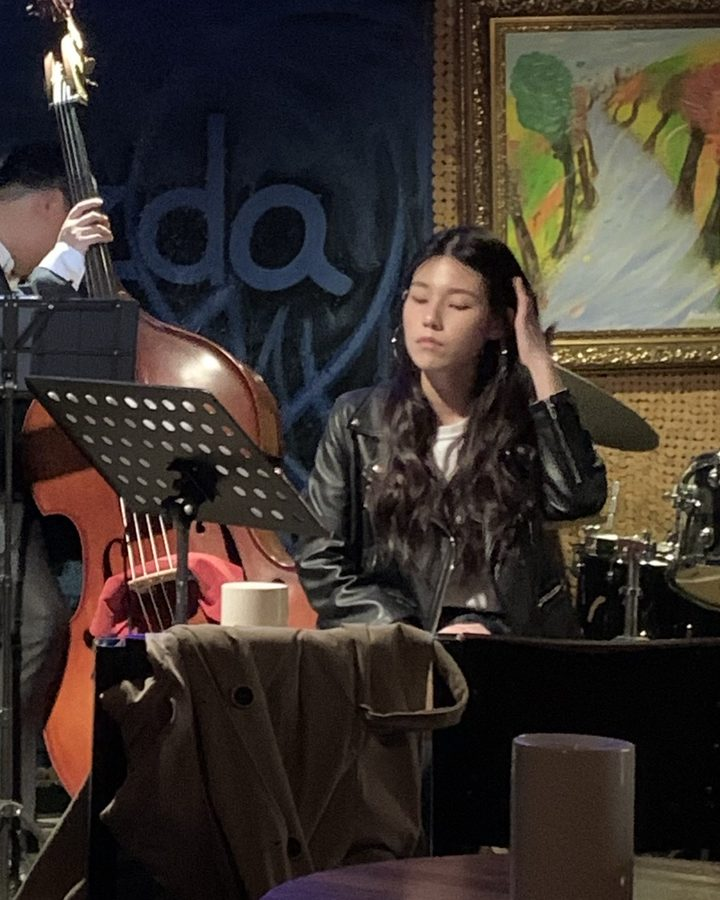
Vocal
KIM IL HYO
김일효
CAREER
- 불후의 명곡 · 유희열의 스케치북 코러스 세션 참여 다수
- 서영은 「비오는 압구정」 코러스 세션
- 서울신학대학교 출강
- 부천 여월중학교 · 서울 배화여자중학교 출강
- 재즈 라이브 — 합정 Jazzda
- 이태원 번 라운지 시가바 · 용산 드래곤시티호텔
- 문화예술공동체 더뮤엘
- 그림책 콘서트 객원 보컬 참여 다수
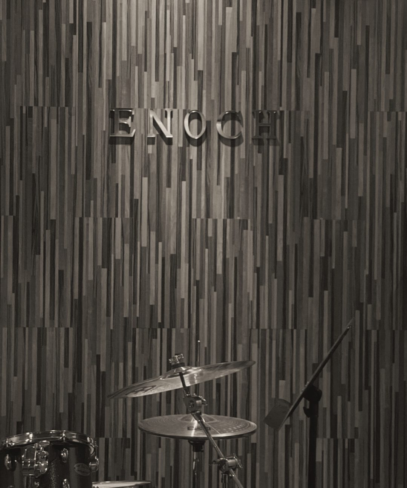
나만의 진짜 소리를 찾는 곳.
Find your own true sound.
에녹실용음악학원 시흥점시흥 · 대야역
01THE ENOCH WAY
진도보다 이해를 먼저 봅니다.
Understanding before progress.
같은 곡도, 사람마다 다르게 가르칩니다.
The same song, taught differently to each person.
기본은 건너뛰지 않습니다.
We don't skip the basics.
02LESSON
시험장에서도 연습한 만큼 연주할 수 있도록, 주기적으로 모의고사를 진행합니다.
처음 악기를 잡는 날부터, 좋아하는 곡을 내 소리로 연주하는 날까지.
퇴근 후, 주말에도. 각자의 시간과 속도에 맞춰 수업합니다.
무대와 작업을 준비하는 사람을 위한 과정입니다.
03TEACHERS
파트별 강사가 1:1로 수업합니다. 옆으로 넘겨 보세요.

Vocal
김일효
CAREER
Vocal
김지수
CAREER
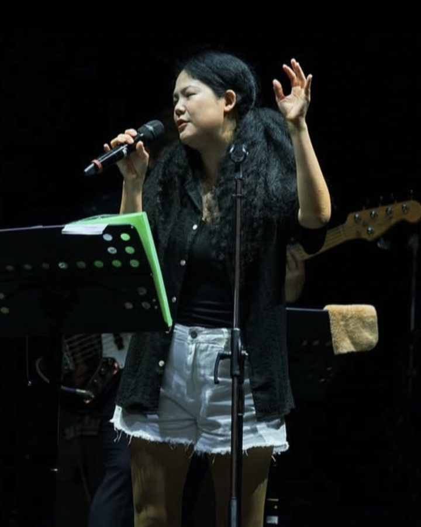
Vocal
이수인
CAREER
Guitar
김건유
CAREER
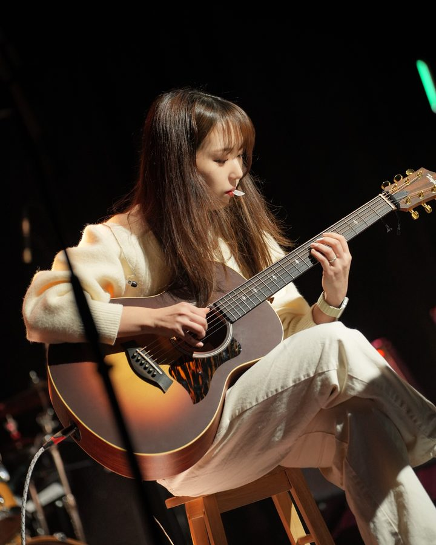
Guitar
문유림
CAREER
Drum
한상희
CAREER
Bass
김진경
CAREER
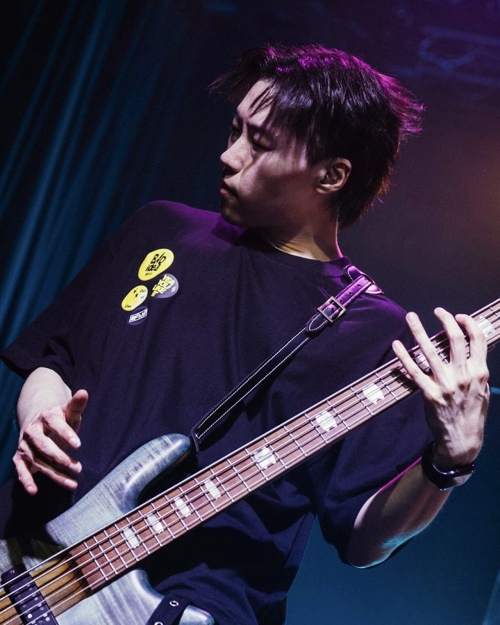
Bass
김혁재
CAREER
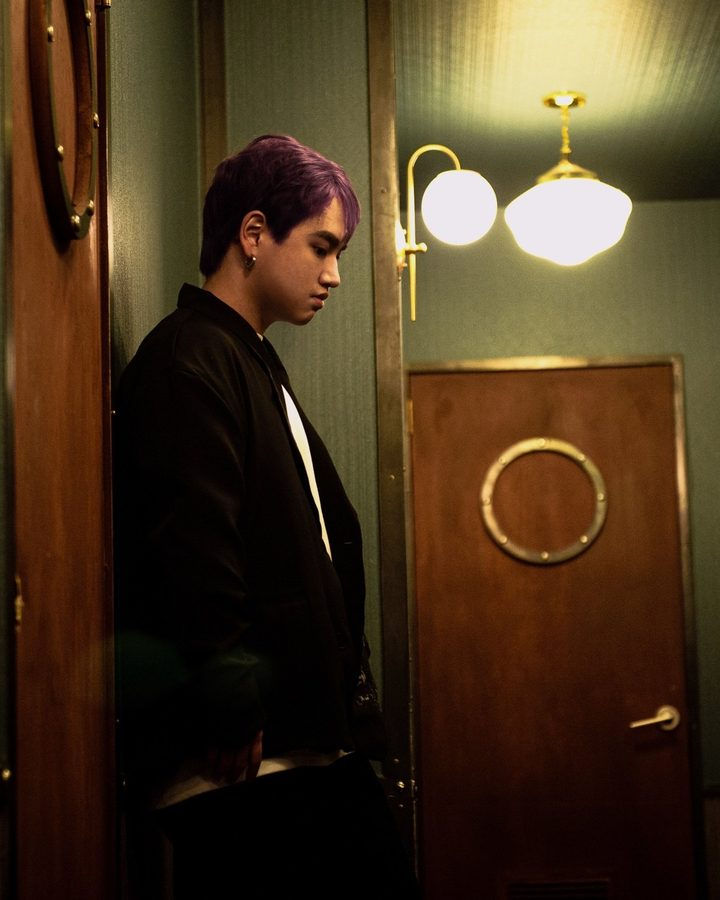
MIDI
김건우
CAREER
04SPACE
수강생은 운영시간 안에 연습실을 자유롭게 이용할 수 있습니다.
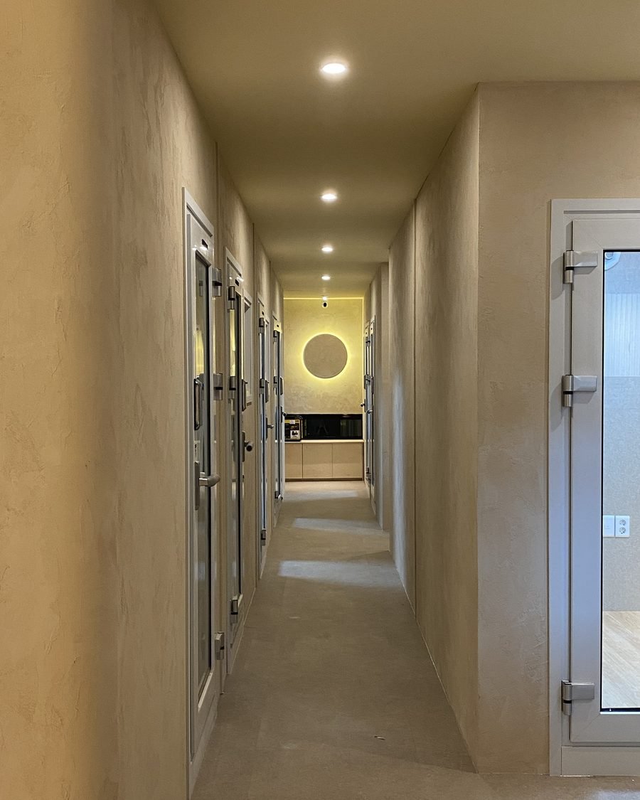
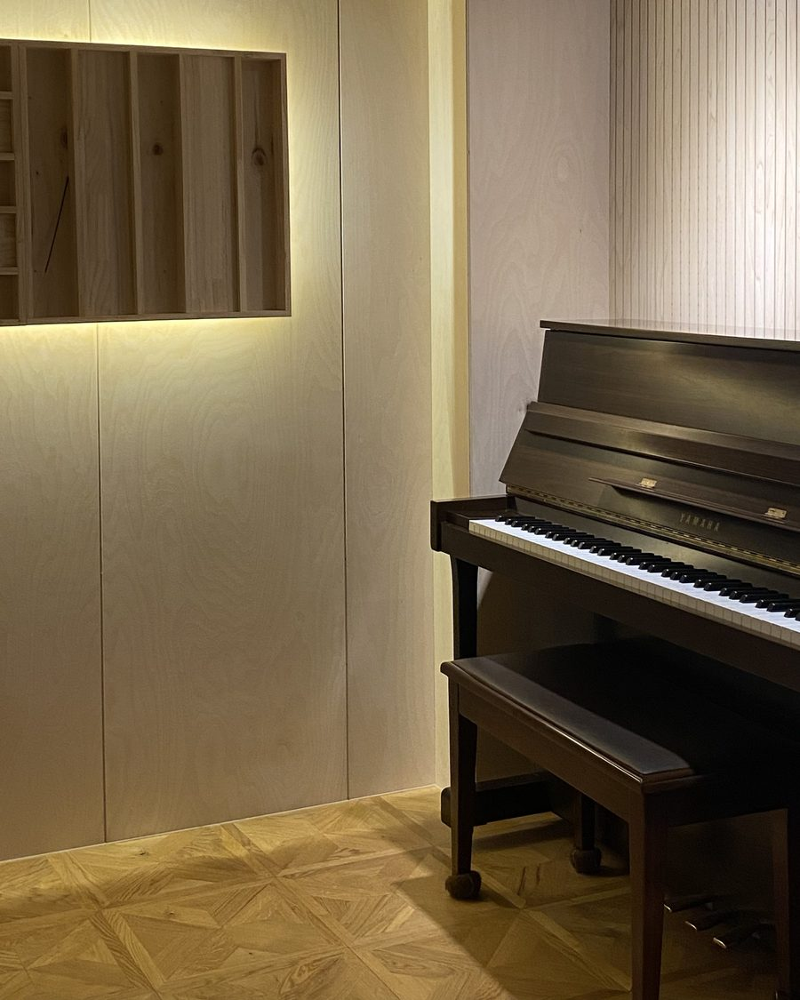
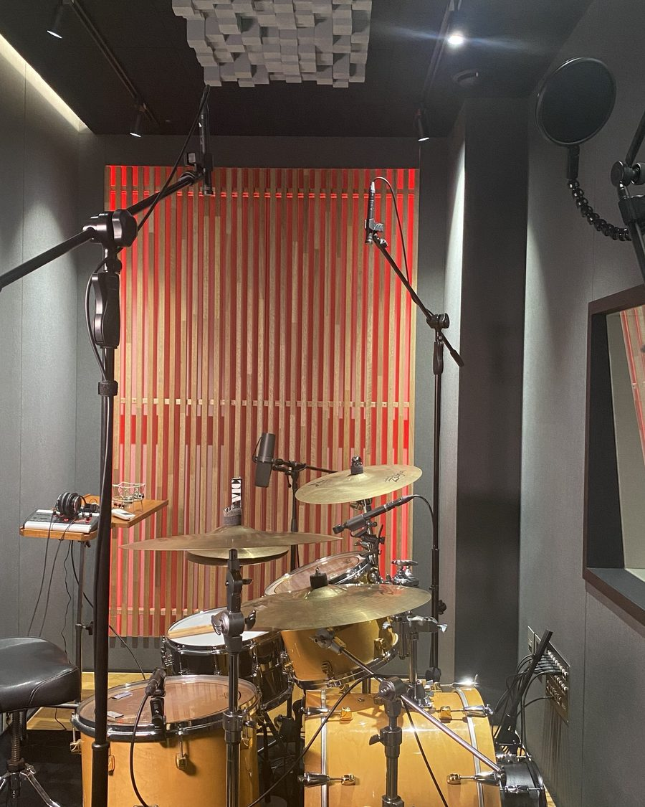
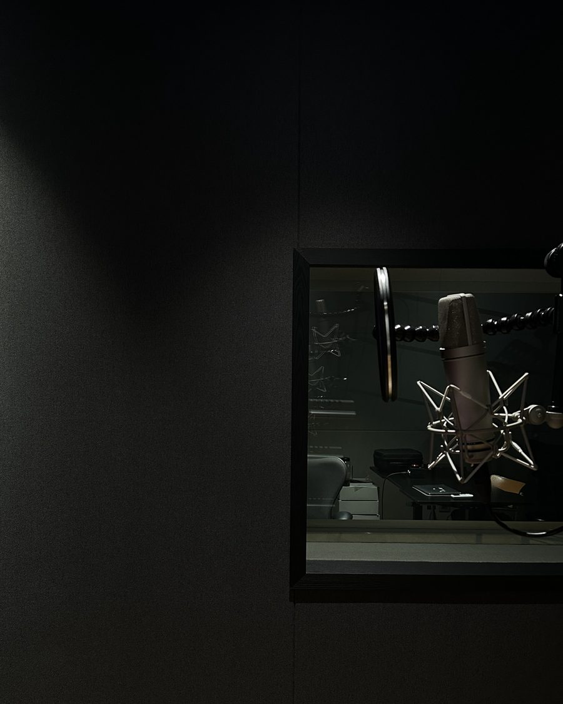
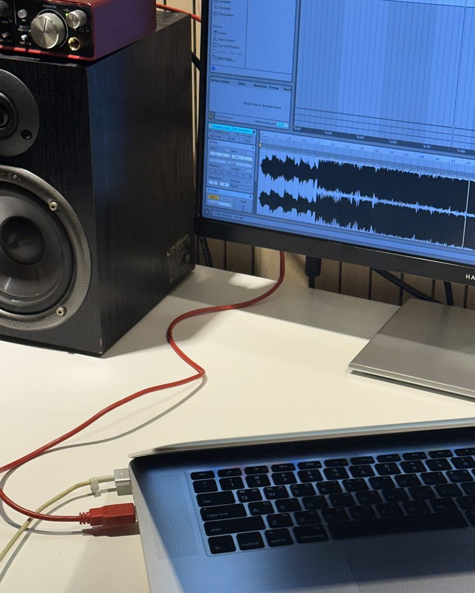
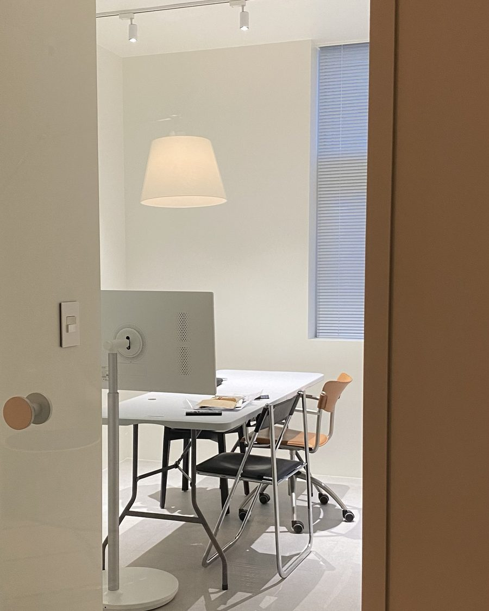
05VISIT
06CONTACT
원하는 과목과 목표, 가능한 시간만 알려 주세요.